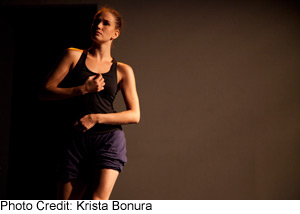

past performance | ||
|  |
The Current Sessions: Vol I, Issue II | |
synopsis:The Current Sessions was conceived in July 2011 to bring like-minded contemporary choreographers together and present work that is in-the-moment and reflective of our current state of mind and process. To this end, all works are created and presented within a time period of six weeks. We are interested in producing detailed works that are fresh, raw, experimental and curious; we want to provide our audience with a glimpse of what dance is right now, and with what dance will be in its future state. We all have the desire to develop our own voices as choreographers in a comfortable environment where spontaneity, openness and the instinctive nature of creation are valued. This edition of The Current Sessions will include work from the "originals" Alexis Convento, Yin Yue, Jonathan Royse Windham, Allison Jones and Genna Baroni, as well as, a new slew of like-minded individuals such as: Jenna Otter (Mon 11/28 only), Jordan Isadore, Bennyroyce Royon, and MADboots dance/Jonathan Campbell (Tues 11/29 only)... how exciting! SUPPORT Us at http://www.kickstarter.com/projects/alexisconvento/support-the-current-sessions | ||
upcoming performances |
|||
 |
|||
| EVQ Film Festival 2018 August 20-25 |
|||
performance archives |
|||
| 2018 | 2017 | 2016 | 2015 |
| 2014 | 2013 | 2012 | 2011 |
| 2010 | 2009 | 2008 | 2007 |